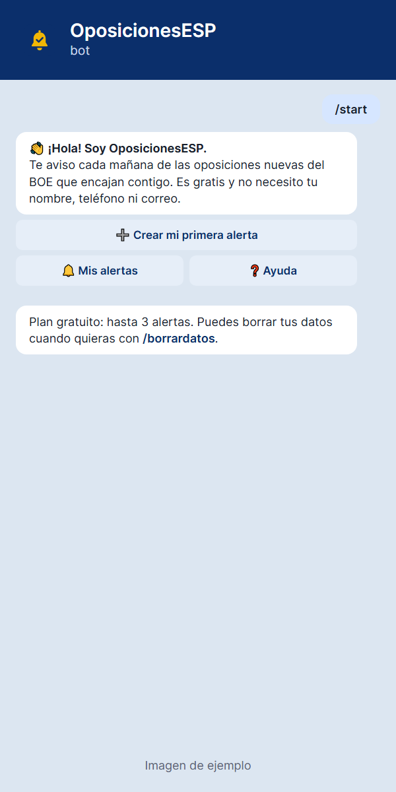
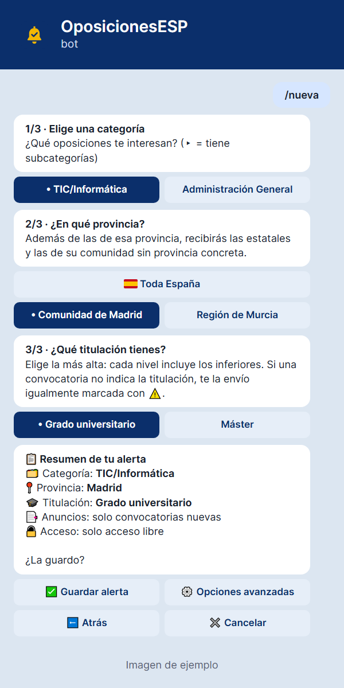
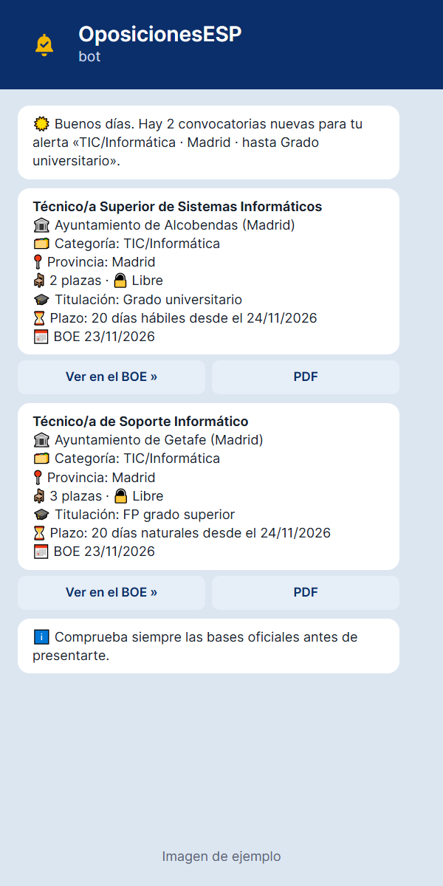

Filtro por categorías
Elige el sector que te interesa, o busca por palabra clave.
Un bot de Telegram gratuito que revisa el BOE por ti y te avisa cada mañana, de lunes a sábado, de las convocatorias nuevas que encajan con tu perfil.
Gratis, sin registro y sin pedirte nombre, teléfono ni correo.
Lo configuras en un minuto y te olvidas: los avisos llegan solos.
Pulsa «Abrir en Telegram» y luego «Iniciar». No hace falta registrarse.
Escoge categoría (o una palabra clave), provincia y titulación. Puedes tener hasta 3 alertas.
De lunes a sábado a las 9:00, si el BOE publica algo que encaja contigo, te llega un mensaje con lo importante.
Filtros pensados para quien prepara oposiciones y no quiere leer el BOE entero cada día.
Elige el sector que te interesa, o busca por palabra clave.
Elige tu provincia y recibirás sus plazas, las estatales y las autonómicas de tu comunidad. O toda España.
Indica tu titulación más alta (ESO, Bachillerato, FP, Grado, Máster…) y no te llegarán convocatorias que exijan más. Si una no la indica, te llega marcada con ⚠️.
Por defecto solo te avisa de plazas de acceso libre. Si ya eres empleado público, puedes incluir la promoción interna.
Cada aviso indica el número de plazas y el plazo de solicitudes cuando la convocatoria los recoge.
Botones al anuncio oficial y a su PDF para que consultes siempre las bases completas.



El plan gratuito cubre lo que necesita la mayoría de opositores.
0 € para siempre
— precio por definir
Sí. El plan gratuito permite hasta 3 alertas a la vez (y crear 5 al mes) sin coste y sin fecha de caducidad. En el futuro habrá un plan Premium opcional con más alertas y más boletines, pero el gratuito seguirá existiendo.
De los datos abiertos del Boletín Oficial del Estado (BOE), que se publican de forma pública cada día. El bot los lee, los clasifica y te envía solo lo que encaja con tus filtros.
No. OposicionesESP es un proyecto independiente y no está afiliado al BOE ni a ninguna administración pública. La información es orientativa: comprueba siempre las bases oficiales antes de presentarte.
Puedes borrar tus alertas desde el propio bot con /borrar, o detener o bloquear el bot en Telegram. Si además quieres que borremos todos tus datos, envía el comando /borrardatos o escríbenos a contacto@ejemplo.com.
Lo mínimo para que funcione: tu identificador de chat de Telegram, las alertas que configuras, el registro de avisos enviados (para no repetirlos) y las fechas en que creas alertas (para el límite mensual). No pedimos nombre, teléfono ni correo. Más detalles en la política de privacidad.
Novedades del bot, convocatorias destacadas y avisos importantes en @OposicionesESP.